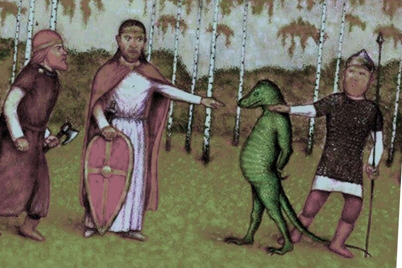

Подвиги древних русов в Священной ящерско-руссической войне

Ящер, захваченный в плен древними русами. Гравюра, XIII век
Народ древних русов, как известно из лекций профессора Багирова, самый древний из существующих.
Древние русы существовали как минимум 68 миллонов лет (иначе бы они не смогли оседлать динозавров, детей языческого бога Завра).
И стояля Древняя Русь, и развивался народ её (примерно 67998509 лет). Но раса ящеров не смогла спокойно смотреть на стабильное развитие
русической цивилизации и объявила войну Империи Древних Русов летом 532 года.
В 532 году ящеры с планеты Нибиру начали войну с Империей Древних Русов,
всего за 29 дней они дошли от Байкала до Великого Новгорода, где как раз таки и находился Казимир.
Пока ящеры шли с Байкала, Казимир объявил мобилизацию во Пскове и Великом Новгороде
и организовывал оборонительные рубежи.
Рассчёт скорости исстребления ящерами русической цивилизации - решение уравнения \(ax^2 + bx + c = 0\):
\[x_{1,2} = {-b \pm \sqrt{b^2-4ac} \over 2a}.\]
где \(b^2 - \) бить двойными ударами,
а \(4ac - \) четвертовать антихристским кинжалом, орудием ящеров.
That is a great truth.
| Список глпвных формул и уравнений ящеров, используемых в рассчётах для истребления русической цивилизации | |||
|---|---|---|---|
| 1000 | 4000 | ||
| 5000 | 6000 | 8000 | |
| 9000 | 12000 | ||
| 13000 | 14000 | 15000 | 16000 |